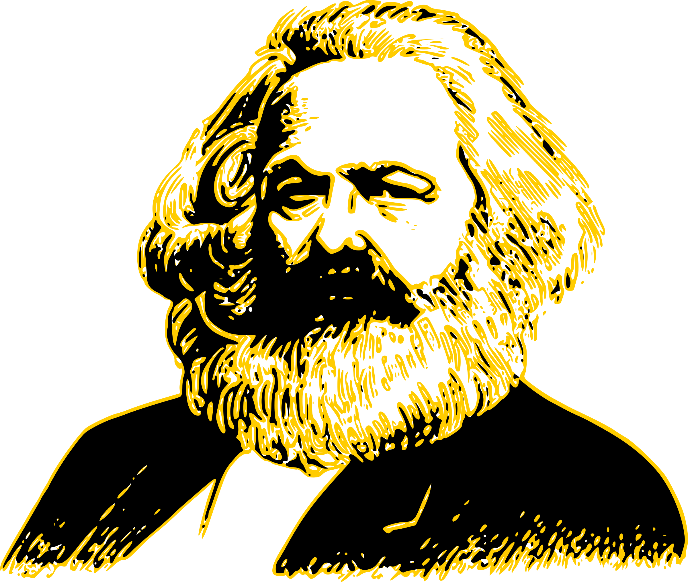

Небольшая предыстория.
Любой, кто ходил в школу, помнит, что одним из обязательных для изучения предметов была химия. Она могла нравиться, а могла и не нравиться – это не важно. И вполне вероятно, что многие знания по этой дисциплине уже забыты и в жизни не применяются. Однако таблицу химических элементов Д. И. Менделеева наверняка помнит каждый. Для многих она так и осталась разноцветной таблицей, где в каждый квадратик вписаны определённые буквы, обозначающие названия химических элементов. Но здесь мы не будем говорить о химии как таковой, и описывать сотни химических реакций и процессов, а расскажем о том, как вообще появилась таблица Менделеева – эта история будет интересна любому творчески мыслящему человеку, да и вообще всем тем, кто охоч до интересной и полезной информации.
В далёком 1668 году выдающимся ирландским химиком, физиком и богословом Робертом Бойлем была опубликована книга, в которой было развенчано немало мифов об алхимии, и в которой он рассуждал о необходимости поиска неразложимых химических элементов. Учёный также привёл их список, состоящий всего из 15 элементов, но допускал мысль о том, что могут быть ещё элементы. Это стало отправной точкой не только в поиске новых элементов, но и в их систематизации.
Сто лет спустя французским химиком Антуаном Лавуазье был составлен новый перечень, в который входили уже 35 элементов. 23 из них позже были признаны неразложимыми. Но поиск новых элементов продолжался учёными по всему миру. И главную роль в этом процессе сыграл знаменитый русский химик Дмитрий Иванович Менделеев – он впервые выдвинул гипотезу о том, что между атомной массой элементов и их расположением в системе может быть взаимосвязь.
Благодаря кропотливому труду и сопоставлению химических элементов Менделеев смог обнаружить связь между элементами, в которой они могут быть одним целым, а их свойства являются не чем-то само собой разумеющимся, а представляют собой периодически повторяющееся явление. В итоге, в феврале 1869 года Менделеев сформулировал первый периодический закон, а уже в марте его доклад «Соотношение свойств с атомным весом элементов» был представлен на рассмотрение Русского химического общества историком химии Н. А. Меншуткиным. Затем в том же году публикация Менделеева была напечатана в журнале «Zeitschrift fur Chemie» в Германии, а в 1871 году новую обширную публикацию учёного, посвящённую его открытию, опубликовал другой немецкий журнал «Annalen der Chemie».
Создание периодической таблицы.
Основная идея к 1869 году уже была сформирована Менделеевым, причём за довольно короткое время, но оформить её в какую-либо упорядоченную систему, наглядно отображающую, что к чему, он долго не мог. В одном из разговоров со своим соратником А. А. Иностранцевым он даже сказал, что в голове у него уже всё сложилось, но вот привести всё к таблице он не может. После этого, согласно данным биографов Менделеева, он приступил к кропотливой работе над своей таблицей, которая продолжалась трое суток без перерывов на сон. Перебирались всевозможные способы организации элементов в таблицу, а работа была осложнена ещё и тем, что в тот период наука знала ещё не обо всех химических элементах. Но, несмотря на это, таблица всё же была создана, а элементы систематизированы.
Легенда о сне Менделеева.
Многие слышали историю, что Д. И. Менделееву его таблица приснилась. Эта версия активно распространялась вышеупомянутым соратником Менделеева А. А. Иностранцевым в качестве забавной истории, которой он развлекал своих студентов. Он говорил, что Дмитрий Иванович лёг спать и во сне отчётливо увидел свою таблицу, в которой все химические элементы были расставлены в нужном порядке. После этого студенты даже шутили, что таким же способом была открыта 40° водка. Но реальные предпосылки для истории со сном всё же были: как уже упоминалось, Менделеев работал над таблицей без сна и отдыха, и Иностранцев однажды застал его уставшим и вымотанным. Днём Менделеев решил немного передохнуть, а некоторое время спустя, резко проснулся, сразу же взял листок бумаги и изобразил на нём уже готовую таблицу. Но сам учёный опровергал всю эту историю со сном, говоря: «Я над ней, может быть, двадцать лет думал, а вы думаете: сидел и вдруг… готово». Так что легенда о сне может быть и очень привлекательна, но создание таблицы стало возможным только благодаря упорному труду.
Дальнейшая работа.
В период с 1869 по 1871 годы Менделеев развивал идеи периодичности, к которым склонялось научное сообщество. И одним из важных этапов данного процесса стало понимание того, что любой элемент в системе должно располагать, исходя из совокупности его свойств в сравнении со свойствами остальных элементов. Основываясь на этом, а также опираясь на результаты исследований в изменении стеклообразующих оксидов, химику удалось внести поправки в значения атомных масс некоторых элементов, среди которых были уран, индий, бериллий и другие.
Пустые клетки, остававшиеся в таблице, Менделеев, конечно же, хотел скорее заполнить, и в 1870 году предсказал, что в скором времени будут открыты неизвестные науке химические элементы, атомные массы и свойства которых он сумел вычислить. Первыми из них стали галлий (открыт в 1875 году), скандий (открыт в 1879 году) и германий (открыт в 1885 году). Затем прогнозы продолжили реализовываться, и были открыты ещё восемь новых элементов, среди которых: полоний (1898 год), рений (1925 год), технеций (1937 год), франций (1939 год) и астат (1942-1943 годы). Кстати, в 1900 году Д. И. Менделеев и шотландский химик Уильям Рамзай пришли к мнению, что в таблицу должны быть включены и элементы нулевой группы – до 1962 года они назывались инертными, а после – благородными газами.
Организация периодической системы.
Химические элементы в таблице Д. И. Менделеева расположены по рядам, в соответствии с возрастанием их массы, а длина рядов подобрана так, чтобы находящиеся в них элементы имели схожие свойства. Например, благородные газы, такие как радон, ксенон, криптон, аргон, неон и гелий с трудом вступают в реакции с другими элементами, а также имеют низкую химическую активность, из-за чего расположены в крайнем правом столбце. А элементы левого столбца (калий, натрий, литий и т.д.) отлично реагируют с прочими элементами, а сами реакции носят взрывной характер. Говоря проще, внутри каждого столбца элементы имеют подобные свойства, варьирующиеся при переходе от одного столбца к другому. Все элементы, вплоть до №92 встречаются в природе, а с №93 начинаются искусственные элементы, которые могут быть созданы лишь в лабораторных условиях.
В своём первоначальном варианте периодическая система понималась только как отражение существующего в природе порядка, и никаких объяснений, почему всё должно обстоять именно так, не было. И лишь когда появилась квантовая механика, истинный смысл порядка элементов в таблице стал понятен.
Уроки творческого процесса.
Говоря о том, какие уроки творческого процесса можно извлечь из всей истории создания периодической таблицы Д. И. Менделеева, можно привести в пример идеи английского исследователя в области творческого мышления Грэма Уоллеса и французского учёного Анри Пуанкаре. Приведём их вкратце.
Согласно исследованиям Пуанкаре (1908 год) и Грэма Уоллеса (1926 год), существует четыре основных стадии творческого мышления:
- Подготовка —
- этап формулирования основной задачи и первые попытки её решения;
- Инкубация —
- этап, во время которого происходит временное отвлечение от процесса, но работа над поиском решения задачи ведётся на подсознательном уровне;
- Озарение —
- этап, на котором находится интуитивное решение. Причём, найтись это решение может в абсолютно не имеющей к задаче ситуации;
- Проверка —
- этап испытаний и реализации решения, на котором происходит проверка этого решения и его возможное дальнейшее развитие.
Как мы видим, в процессе создания своей таблицы Менделеев интуитивно следовал именно этим четырём этапам. Насколько это эффективно, можно судить по результатам, т.е. по тому, что таблица была создана. А учитывая, что её создание стало огромным шагом вперёд не только для химической науки, но и для всего человечества, приведённые выше четыре этапа могут быть применимы как к реализации небольших проектов, так и к осуществлению глобальных замыслов. Главное помнить, что ни одно открытие, ни одно решение задачи не могут быть найдены сами по себе, как бы ни хотели мы увидеть их во сне и сколько бы ни спали. Чтобы что-то получилось, не важно, создание это таблицы химических элементов или разработка нового маркетинг-плана, нужно обладать определёнными знаниями и навыками, а также умело использовать свои потенциал и упорно работать.
Мы желаем вам успехов в ваших начинаниях и успешной реализации задуманного!